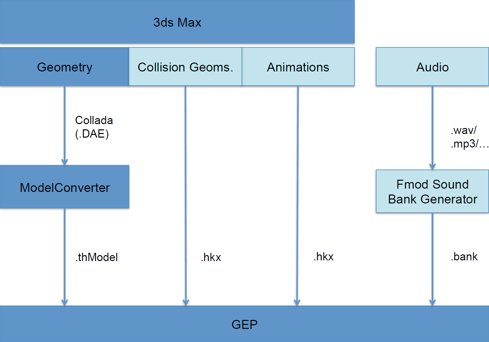
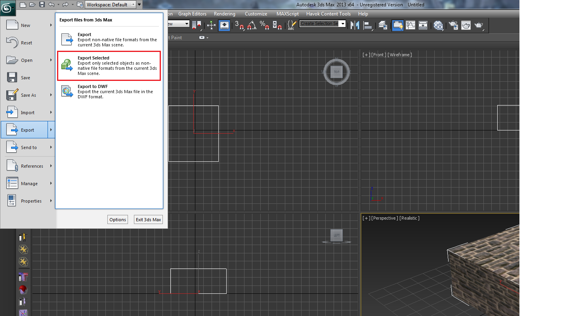
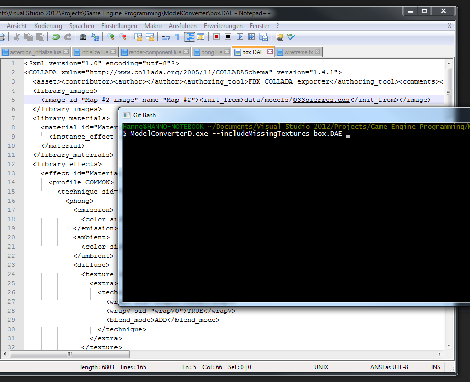

Importing Data to the GEP Engine
You will need
- this archive available at http://metafnord.net/files/gep.zip
- 3ds Max 2013 (e.g. educational plan available for HdM students)
- Havok Content Tools available at http://www.havok.com/try-havok

Acquire a model or create your own using 3ds Max 2013. Important: Make sure that the textures are in the .dds format (DXT5)! If necessary, convert them.
Export the selected model from 3ds Max 2013:

Important: Select Z as the Up-Axis!

Use the ModelConverterD.exe to convert the .dae file (Collada) to the .thModel format. This can be done either on the command line or by using drag drop.

Additional Information:
- Copy the exported
.thModeltoGEP%\data\models\ - Use relative paths for textures!
Creating a RenderComponent:
local renderComponent = go:createRenderComponent()
renderComponent:setPath("data/models/box.thModel")